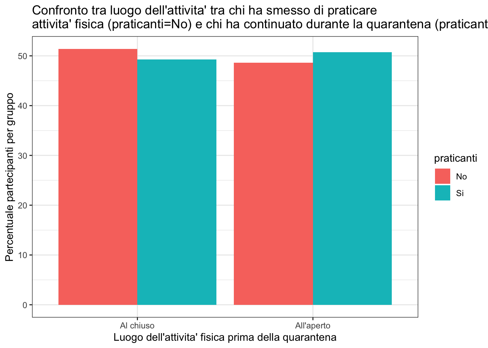
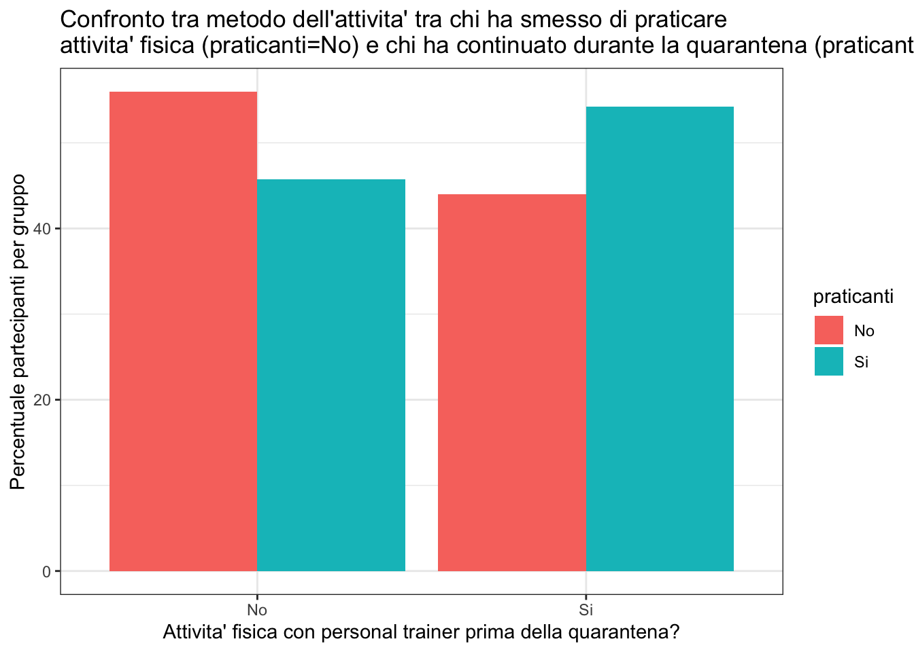
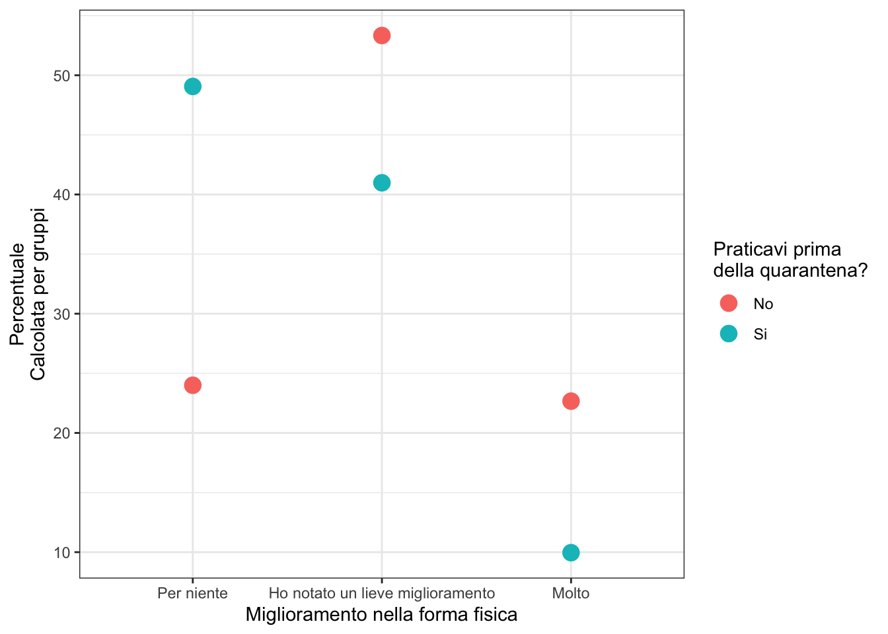
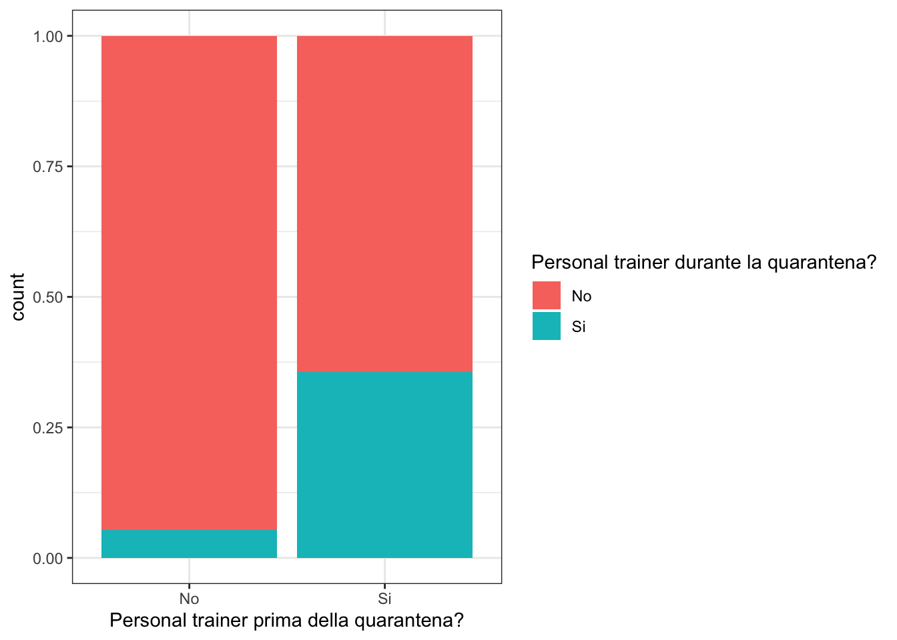

Last updated: 2020-06-27
Checks: 7 0
Knit directory: tesi-magistrale-lucia/
This reproducible R Markdown analysis was created with workflowr (version 1.6.2). The Checks tab describes the reproducibility checks that were applied when the results were created. The Past versions tab lists the development history.
Great! Since the R Markdown file has been committed to the Git repository, you know the exact version of the code that produced these results.
Great job! The global environment was empty. Objects defined in the global environment can affect the analysis in your R Markdown file in unknown ways. For reproduciblity it’s best to always run the code in an empty environment.
The command set.seed(20200530) was run prior to running the code in the R Markdown file. Setting a seed ensures that any results that rely on randomness, e.g. subsampling or permutations, are reproducible.
Great job! Recording the operating system, R version, and package versions is critical for reproducibility.
Nice! There were no cached chunks for this analysis, so you can be confident that you successfully produced the results during this run.
Great job! Using relative paths to the files within your workflowr project makes it easier to run your code on other machines.
Great! You are using Git for version control. Tracking code development and connecting the code version to the results is critical for reproducibility.
The results in this page were generated with repository version e99684e. See the Past versions tab to see a history of the changes made to the R Markdown and HTML files.
Note that you need to be careful to ensure that all relevant files for the analysis have been committed to Git prior to generating the results (you can use wflow_publish or wflow_git_commit). workflowr only checks the R Markdown file, but you know if there are other scripts or data files that it depends on. Below is the status of the Git repository when the results were generated:
Ignored files:
Ignored: .DS_Store
Ignored: .Rhistory
Ignored: .Rproj.user/
Ignored: data/dati_da_controllare/
Ignored: data/dati_da_controllare_cambiati/
Note that any generated files, e.g. HTML, png, CSS, etc., are not included in this status report because it is ok for generated content to have uncommitted changes.
These are the previous versions of the repository in which changes were made to the R Markdown (analysis/3.0-effetto-su-attivita-fisica.Rmd) and HTML (docs/3.0-effetto-su-attivita-fisica.html) files. If you’ve configured a remote Git repository (see ?wflow_git_remote), click on the hyperlinks in the table below to view the files as they were in that past version.
| File | Version | Author | Date | Message |
|---|---|---|---|---|
| Rmd | e99684e | Anna Quaglieri | 2020-06-27 | wflow_publish(“analysis/3.0-effetto-su-attivita-fisica.Rmd”) |
| html | be1f353 | Anna Quaglieri | 2020-06-27 | Build site. |
| Rmd | 27aa543 | Anna Quaglieri | 2020-06-27 | wflow_publish(“analysis/3.0-effetto-su-attivita-fisica.Rmd”) |
| html | d16603d | Anna Quaglieri | 2020-06-27 | Build site. |
| Rmd | adc8e3c | Anna Quaglieri | 2020-06-27 | wflow_publish(“analysis/3.0-effetto-su-attivita-fisica.Rmd”) |
| html | f884551 | Anna Quaglieri | 2020-06-27 | Build site. |
| Rmd | 55d065b | Anna Quaglieri | 2020-06-27 | wflow_publish(“analysis/3.0-effetto-su-attivita-fisica.Rmd”) |
| html | f5d023a | Anna Quaglieri | 2020-06-27 | Build site. |
| Rmd | 9ad47df | Anna Quaglieri | 2020-06-27 | wflow_publish(“analysis/3.0-effetto-su-attivita-fisica.Rmd”) |
| html | 0ad4cd7 | Anna Quaglieri | 2020-06-27 | Build site. |
| Rmd | aae1faf | Anna Quaglieri | 2020-06-27 | wflow_publish(“analysis/3.0-effetto-su-attivita-fisica.Rmd”) |
| html | 6a20b17 | Anna Quaglieri | 2020-06-27 | Build site. |
| Rmd | 8e38b69 | Anna Quaglieri | 2020-06-27 | wflow_publish(“analysis/3.0-effetto-su-attivita-fisica.Rmd”) |
| html | 5a5f339 | Anna Quaglieri | 2020-06-24 | Build site. |
| Rmd | 4908c16 | Anna Quaglieri | 2020-06-24 | wflow_publish(“analysis/3.0-effetto-su-attivita-fisica.Rmd”) |
| html | d0f491b | Anna Quaglieri | 2020-06-24 | Build site. |
| Rmd | 3b8fd0a | Anna Quaglieri | 2020-06-24 | wflow_publish(“analysis/3.0-effetto-su-attivita-fisica.Rmd”) |
| html | de8f34e | Anna Quaglieri | 2020-06-24 | Build site. |
| Rmd | cf3dfe4 | Anna Quaglieri | 2020-06-24 | wflow_publish(“analysis/3.0-effetto-su-attivita-fisica.Rmd”) |
| html | 206a155 | Anna Quaglieri | 2020-06-24 | Build site. |
| Rmd | e0c3efc | Anna Quaglieri | 2020-06-24 | wflow_publish(“analysis/3.0-effetto-su-attivita-fisica.Rmd”) |
| html | 3fd4f69 | Anna Quaglieri | 2020-06-22 | Build site. |
| Rmd | 6ea3086 | Anna Quaglieri | 2020-06-22 | wflow_publish(“analysis/3.0-effetto-su-attivita-fisica.Rmd”) |
| html | 540cbb6 | Anna Quaglieri | 2020-06-18 | Build site. |
| Rmd | e97bf9d | Anna Quaglieri | 2020-06-18 | wflow_publish(“analysis/3.0-effetto-su-attivita-fisica.Rmd”) |
| html | b909210 | Anna Quaglieri | 2020-06-18 | Build site. |
| Rmd | 76e7f9f | Anna Quaglieri | 2020-06-18 | wflow_publish(“analysis/3.0-effetto-su-attivita-fisica.Rmd”) |
| html | a32efd0 | Anna Quaglieri | 2020-06-18 | Build site. |
| Rmd | 0909260 | Anna Quaglieri | 2020-06-18 | wflow_publish(“analysis/3.0-effetto-su-attivita-fisica.Rmd”) |
| html | 9f2c183 | Anna Quaglieri | 2020-06-16 | Build site. |
| Rmd | e91132f | Anna Quaglieri | 2020-06-16 | wflow_publish(c(“analysis/2.0-demografia-del-campione.Rmd”, “analysis/3.0-effetto-su-attivita-fisica.Rmd”)) |
| html | 58d9cf2 | Anna Quaglieri | 2020-06-02 | Build site. |
| Rmd | 6c546f8 | Anna Quaglieri | 2020-06-02 | wflow_publish(“analysis/3.0-effetto-su-attivita-fisica.Rmd”) |
| html | 040d59f | Anna Quaglieri | 2020-05-31 | Build site. |
| Rmd | b606d3c | Anna Quaglieri | 2020-05-31 | wflow_publish(“analysis/3.0-effetto-su-attivita-fisica.Rmd”, |
| Rmd | 1056d41 | Anna Quaglieri | 2020-05-31 | add question 1 |
| html | 1056d41 | Anna Quaglieri | 2020-05-31 | add question 1 |
| html | fe7bd4c | Anna Quaglieri | 2020-05-31 | Build site. |
| html | 57d49d2 | Anna Quaglieri | 2020-05-31 | Build site. |
| html | bf5f804 | Anna Quaglieri | 2020-05-31 | Build site. |
| Rmd | ac57795 | Anna Quaglieri | 2020-05-31 | aggiunge demografia del campione |
| html | ac57795 | Anna Quaglieri | 2020-05-31 | aggiunge demografia del campione |
| Prima | Durante | Freq |
|---|---|---|
| No | No | 51 |
| Si | No | 109 |
| No | Si | 73 |
| Si | Si | 686 |
$data
No change Change Total
Si 686 109 795
No 51 73 124
Total 737 182 919
$measure
risk ratio with 95% C.I.
estimate lower upper
Si 1.0000 NA NA
No 4.2938 3.417874 5.394206
$p.value
two-sided
midp.exact fisher.exact chi.square
Si NA NA NA
No 0 7.011616e-26 8.282568e-32
$correction
[1] FALSE
attr(,"method")
[1] "Unconditional MLE & normal approximation (Wald) CI"Le persone che hanno dichiarato di non fare attivita’ fisica prima della quarantena hanno una probabilita’ 4 volte piu’ grande di cambiare attitudine rispetto a chi gia’ faceva attivita’ prima della quarantena
Nella stima di questo rischio non stiamo tenendo in conto di nessun altro fattore delle persone che hanno risposto al questionario (eta, abitazione, sesso etc..)
Il rapporto (Risk Ratio) si ottiene facendo il rapporto tra la probabilita’ di cambiare tra chi ha detto No prima e chi ha detto Si prima:
\[Risk\;Ratio_{No\;vs\;Si\;prima}=\frac{\frac{73}{124}}{\frac{109}{795}}=4.29\] \[Risk\;Ratio_{Si\;vs\;No\;prima}=\frac{1}{Risk\;Ratio_{No\;vs\;Si\;prima}}=0.23\]
2-sample test for equality of proportions with continuity correction
data: yes out of numero_persone
X-squared = 4.8179, df = 1, p-value = 0.02817
alternative hypothesis: two.sided
95 percent confidence interval:
0.004079869 0.073422822
sample estimates:
prop 1 prop 2
0.8557589 0.8170075 Nel complesso, la proporzione delle persone che pratica attivita’ fisica diminuisce marginalmente, passando dall’0.86% al 0.82%.
| ex_durante_no_motivo | N.Risposte |
|---|---|
| mancanza di tempo | 5 |
| impossibilità di eseguire l’attività in casa | 6 |
| altro | 8 |
| mancanza di strutture | 26 |
| mancanza di voglia | 64 |
Al chiuso All'aperto
0.5137615 0.4862385
1 o 2 volte a settimana Almeno 3 volte a settimana
0.486238532 0.412844037
Meno di una volta a settimana Tutti i giorni
0.009174312 0.091743119 Il tipo di abitazione o stato professionale e’ diverso in quelli che hanno smesso di praticare rispetto agli altri?
Lo stato professionale non e’ stato raccolto per quelli che hanno smesso di praticare attivita’! Per sbaglio..
Ci sono 759 partecipanti che hanno continuato/iniziato a praticare e 109 che hanno smesso.
# A tibble: 4 x 4
# Groups: ex_pre_dove [2]
ex_pre_dove praticanti n percent_praticanti
<chr> <chr> <int> <dbl>
1 Al chiuso No 56 51.4
2 Al chiuso Si 338 49.3
3 All'aperto No 53 48.6
4 All'aperto Si 348 50.7
Ci sono 686 partecipanti che hanno continuato a praticare e 109 che hanno smesso.
# A tibble: 6 x 4
# Groups: ex_pre_come [3]
ex_pre_come praticanti n percent_praticanti
<chr> <chr> <int> <dbl>
1 Da solo No 35 32.1
2 Da solo Si 252 36.7
3 In coppia No 15 13.8
4 In coppia Si 57 8.31
5 In gruppo No 59 54.1
6 In gruppo Si 377 55.0
Ci sono 686 partecipanti che hanno continuato a praticare e 109 che hanno smesso.
# A tibble: 4 x 4
# Groups: ex_pre_pt [2]
ex_pre_pt praticanti n percent_praticanti
<chr> <chr> <int> <dbl>
1 No No 61 56.0
2 No Si 314 45.8
3 Si No 48 44.0
4 Si Si 372 54.2
Ci sono 686 partecipanti che hanno continuato a praticare e 109 che hanno smesso.
Motivazioni per non praticare prima della quarantena
| ex_pre_no_motivo | N.Risposte |
|---|---|
| altro | 1 |
| problemi fisici | 2 |
| questione economica | 2 |
| mancanza di voglia | 31 |
| mancanza di tempo | 37 |
Motivazioni per praticare durante la quarantena
| ex_durante_motivo | N.Risposte |
|---|---|
| fa parte del mio lavoro | 2 |
| per rilassarmi | 6 |
| svago e passatempo | 18 |
| voglio rimanere in forma e in salute | 78 |
Prima Durante Freq
1 1 o 2 1 o 2 58
2 Almeno 3 1 o 2 74
3 Meno di una 1 o 2 1
4 Non\npraticante 1 o 2 16
5 Ogni giorno 1 o 2 4
6 1 o 2 Almeno 3 58
7 Almeno 3 Almeno 3 184
8 Meno di una Almeno 3 4
9 Non\npraticante Almeno 3 31
10 Ogni giorno Almeno 3 45
11 1 o 2 Meno di una 8
12 Almeno 3 Meno di una 11
13 Meno di una Meno di una 1
14 Non\npraticante Meno di una 2
15 Ogni giorno Meno di una 1
16 1 o 2 Non\npraticante 53
17 Almeno 3 Non\npraticante 45
18 Meno di una Non\npraticante 1
19 Non\npraticante Non\npraticante 51
20 Ogni giorno Non\npraticante 10
21 1 o 2 Ogni giorno 34
22 Almeno 3 Ogni giorno 110
23 Meno di una Ogni giorno 4
24 Non\npraticante Ogni giorno 24
25 Ogni giorno Ogni giorno 89
Converti in numeri
| Version | Author | Date |
|---|---|---|
| de8f34e | Anna Quaglieri | 2020-06-24 |
Il grafico sotto mostra la distribuzione della differenza tra la frequenza nella pratica di attivita’ fisica prima e dopo. In generale c’e’ un numero simile di persone che aumentano o diminuiscono la frequenza anche se leggeremente piu’ persone aumentano la frequenza (la distribuzione e’ piuttosto simmetrica attorno allo zero, media = 0.041 e t-test per l’uguaglianza della media a zero non e’ significativo al 5%).
One Sample t-test
data: tab_numeri$Cambiamento
t = 0.8371, df = 918, p-value = 0.4028
alternative hypothesis: true mean is not equal to 0
95 percent confidence interval:
-0.05559224 0.13829083
sample estimates:
mean of x
0.04134929
| Version | Author | Date |
|---|---|---|
| 040d59f | Anna Quaglieri | 2020-05-31 |

| forma_fisica_migliorata | ex_pre_si_no | N.partecipanti |
|---|---|---|
| Per niente | No | 24.00000 |
| Per niente | Si | 49.06205 |
| Ho notato un lieve miglioramento | No | 53.33333 |
| Ho notato un lieve miglioramento | Si | 40.98124 |
| Molto | No | 22.66667 |
| Molto | Si | 9.95671 |

| Version | Author | Date |
|---|---|---|
| be1f353 | Anna Quaglieri | 2020-06-27 |
R version 4.0.0 (2020-04-24)
Platform: x86_64-apple-darwin17.0 (64-bit)
Running under: macOS Catalina 10.15.4
Matrix products: default
BLAS: /Library/Frameworks/R.framework/Versions/4.0/Resources/lib/libRblas.dylib
LAPACK: /Library/Frameworks/R.framework/Versions/4.0/Resources/lib/libRlapack.dylib
locale:
[1] en_AU.UTF-8/en_AU.UTF-8/en_AU.UTF-8/C/en_AU.UTF-8/en_AU.UTF-8
attached base packages:
[1] stats graphics grDevices utils datasets methods base
other attached packages:
[1] ggExtra_0.9 readxl_1.3.1 epitools_0.5-10.1 gridExtra_2.3
[5] modelsummary_0.3.0 ggalluvial_0.11.3 here_0.1 googledrive_1.0.1
[9] forcats_0.5.0 stringr_1.4.0 dplyr_1.0.0 purrr_0.3.4
[13] tidyr_1.1.0 tibble_3.0.1 ggplot2_3.3.1 tidyverse_1.3.0
[17] readr_1.3.1 workflowr_1.6.2
loaded via a namespace (and not attached):
[1] Rcpp_1.0.4.6 lubridate_1.7.8 lattice_0.20-41 utf8_1.1.4
[5] assertthat_0.2.1 rprojroot_1.3-2 digest_0.6.25 mime_0.9
[9] R6_2.4.1 cellranger_1.1.0 backports_1.1.7 reprex_0.3.0
[13] evaluate_0.14 highr_0.8 httr_1.4.1 pillar_1.4.4
[17] rlang_0.4.6 miniUI_0.1.1.1 rstudioapi_0.11 whisker_0.4
[21] blob_1.2.1 rmarkdown_2.1 labeling_0.3 munsell_0.5.0
[25] shiny_1.5.0 broom_0.5.6 compiler_4.0.0 httpuv_1.5.3.1
[29] modelr_0.1.8 xfun_0.14 pkgconfig_2.0.3 htmltools_0.5.0
[33] tidyselect_1.1.0 fansi_0.4.1 crayon_1.3.4 dbplyr_1.4.4
[37] withr_2.2.0 later_1.0.0 grid_4.0.0 xtable_1.8-4
[41] nlme_3.1-147 jsonlite_1.6.1 gtable_0.3.0 lifecycle_0.2.0
[45] DBI_1.1.0 git2r_0.27.1 magrittr_1.5 scales_1.1.1
[49] cli_2.0.2 stringi_1.4.6 farver_2.0.3 fs_1.4.1
[53] promises_1.1.0 xml2_1.3.2 ellipsis_0.3.1 generics_0.0.2
[57] vctrs_0.3.0 RColorBrewer_1.1-2 tools_4.0.0 glue_1.4.1
[61] hms_0.5.3 fastmap_1.0.1 yaml_2.2.1 colorspace_1.4-1
[65] rvest_0.3.5 knitr_1.28 haven_2.3.0